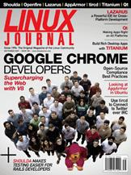

Shutdown Archive web server
Search:
Linux Journal
Issue #185/September 2009

Features
Google Chrome: the Making of a Cross-Platform Browser
by James Gray
What does it take to make a cross-platform browser work well on three platforms?
Rich Cross-Platform Desktop Applications Using Open-Source Titanium
by Mark Obcena
Web developer, meet the desktop.
Lazarus for Cross-Platform Development
by Mattias Gaertner
Pascal. Native code. Linux, Windows and Mac, oh my!
How to Be Cute on All Desktops with Qt
by Johan Thelin
It's not called Qt for nuttin.
Indepth
Open-Source Compliance
by Ibrahim Haddad
Getting started guide and industry best practices.
Columns
Reuven M. Lerner's At the Forge
Testing Rails Applications with Shoulda
Marcel Gagné's Cooking with Linux
Cross at Your Platform?
Dave Taylor's Work the Shell
Messing Around with ImageMagick
Mick Bauer's Paranoid Penguin
AppArmor in Ubuntu 9
Kyle Rankin's Hack and /
What Really IRCs Me: Twitter
Doc Searls' EOF
Conferences: Pro & Un
In Every Issue
Current_Issue.tar.gz
Letters
upFRONT
New Products
New Projects
Archive Index
Shutdown Archive web server
Search:
Copyright © 1994 - 2018
Linux Journal
. All rights reserved.